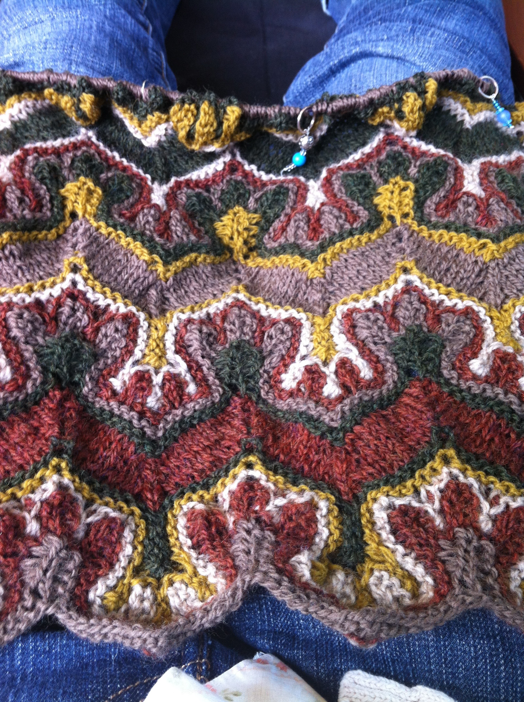

Hey all,
I feel like I’ve been sitting at a road block in my programming knowlegde. I’ve decided to take some time out of each day to sit down, learn a new design pattern and how it’s applied and whip up an example.
Main Points of Design Patterns
- Seperate out volatile code
- Promotes DRY code
- Improves maintainability
- Program to an interface not an implementation: Code should belong to the most generic class possible. Specific classes should inherit from more general classes.
- Increases modularity
- Prefer composition over inheritance: Instead of saying an object is a kind of something, say an object has something. It is better to reference a class than to put functionality in a superclass
- increases modularity
- increases encapsulation
- Delegate! Let other classes handle functionality within their domain.
- Don’t implement features or designs if you don’t need them. As Sandi Metz would say. Don’t try to predict the future. Code so that you can adapt to the future.
Let’s start! (whoooo)
Template Pattern
Templating helps keep messy if statements out of your code by seperating them out into more specific classes. Take this super simplified example of yarn (Come on I’m a knitter what were you expecting).
Here I’m using if statements to determine the output based on the weight of the yarn (For you non-knitters weight is the thickness of the yarn). It would be better if I seperated the if statement into their own seperate classes that inherit from the Yarn class. Taking this:
1 2 3 4 5 6 7 8 9 10 11 12 13 14 | |
to
1 2 3 4 5 6 7 8 9 10 11 12 13 14 15 16 17 18 19 20 21 22 23 24 25 26 | |
But Beth! There’s more code now!
Yeah, there is. But it’s much easier to add new things now. Say we wanted to add a standard gauge. If it was still held in the yarn class we would have to make another if/else statement. Pretty much every time you handeled worsted weight yarn differently than fingering weight yarn, you would need another if/else statement. Using the Templating pattern helps to seperate those out and keep the code more modular.
Anyway! That’s all my time for now. Now I have to go work on…
